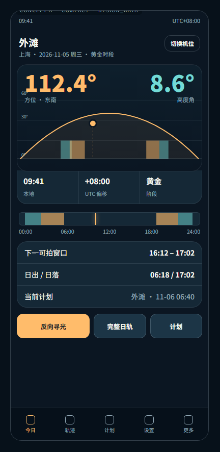
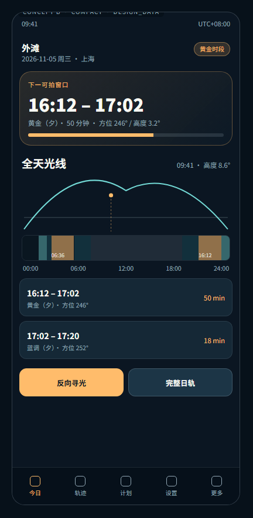
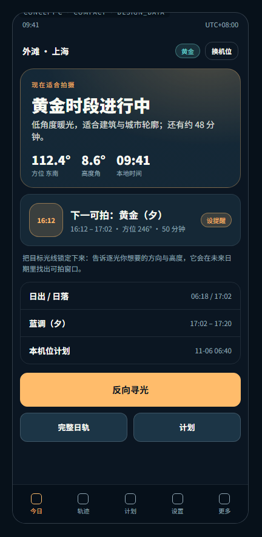

同一套设计 Token、同一批设计数据（外滩 09:41 黄金时段），只有**信息架构**不同。 三套都未实现到生产代码；请选择一套后我再落地。



| 验收指标 | A · Precision Instrument | B · Solar Timeline | C · Field Photographer |
|---|---|---|---|
| 视觉重心是否明确 | 明确：方位/高度大读数 + 仪表曲线 | 明确：全天时间轴横贯首屏 | 明确：结论卡「现在适合拍摄」 |
| 专业摄影工具定位 | 强：最接近专业仪表 | 中强：偏时间规划 | 中：偏向导/现场助手 |
| 信息重复 | 低（日出日落只在明细行出现一次） | 最低（时段靠分段带 + 两个窗口卡表达） | 中（结论 + 下一窗口有轻微重叠） |
| 主次层级 | 读数 → 曲线 → 明细 | 下一窗口 → 全天分布 → 列表 | 结论 → 下一窗口 → 细节（渐进披露最好） |
| 首屏能否完成核心判断 | 能：方位/高度/阶段/时段条齐全 | 能：知道现在位置与下一窗口 | 能：直接给「能否拍/还有多久」 |
| 时间/角度可读性 | 最强（等宽数字、三列对齐） | 强（时间轴与列表一致） | 中（数字少，靠结论语法） |
| 图表专业语义 | 强：地平线 + 高度刻度 + 真实时段段 | 强：分段带按真实比例，另有曲线缩略 | 弱：以结论为主，曲线移入二级页 |
| 交互入口自然度 | 底部三段按钮（反向寻光/日轨/计划） | 时间轴可点段 + 底部双按钮 | 主 CTA 独占一行（最易发现） |
| 深浅色协调基础 | 好：靠面与细线分层 | 好：分段带与底色对比充分 | 好：结论卡使用柔和径向渐变 |
| 扩展到平板/折叠/2-in-1 | 最好：读数列可直接变双栏左仪表右明细 | 好：时间轴可横向延展为主区 | 中：结论卡在大屏会显得单薄 |